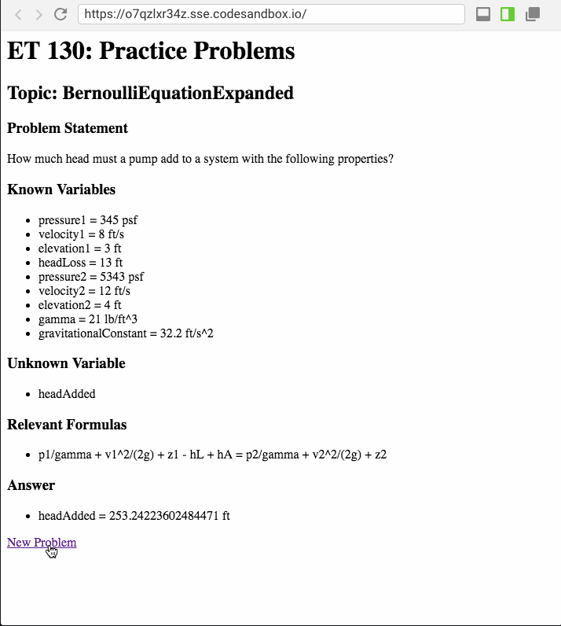
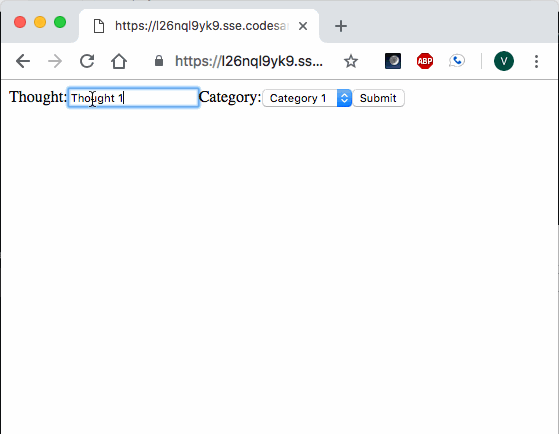
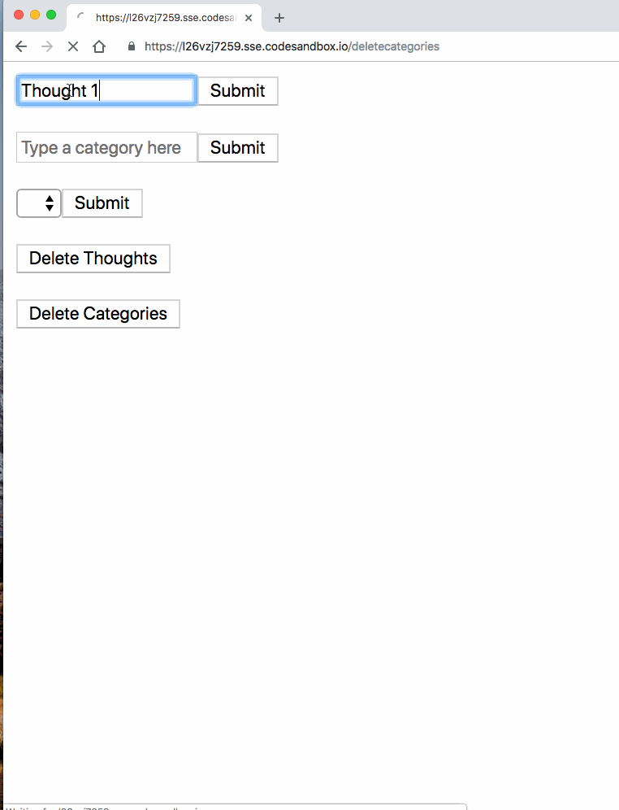
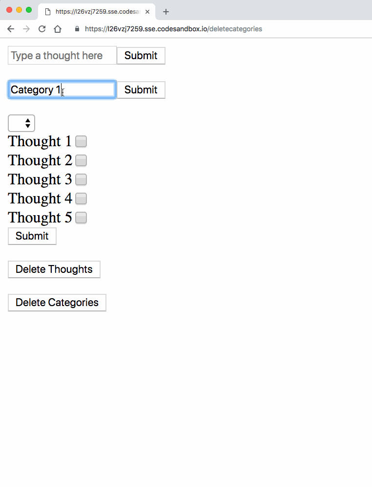
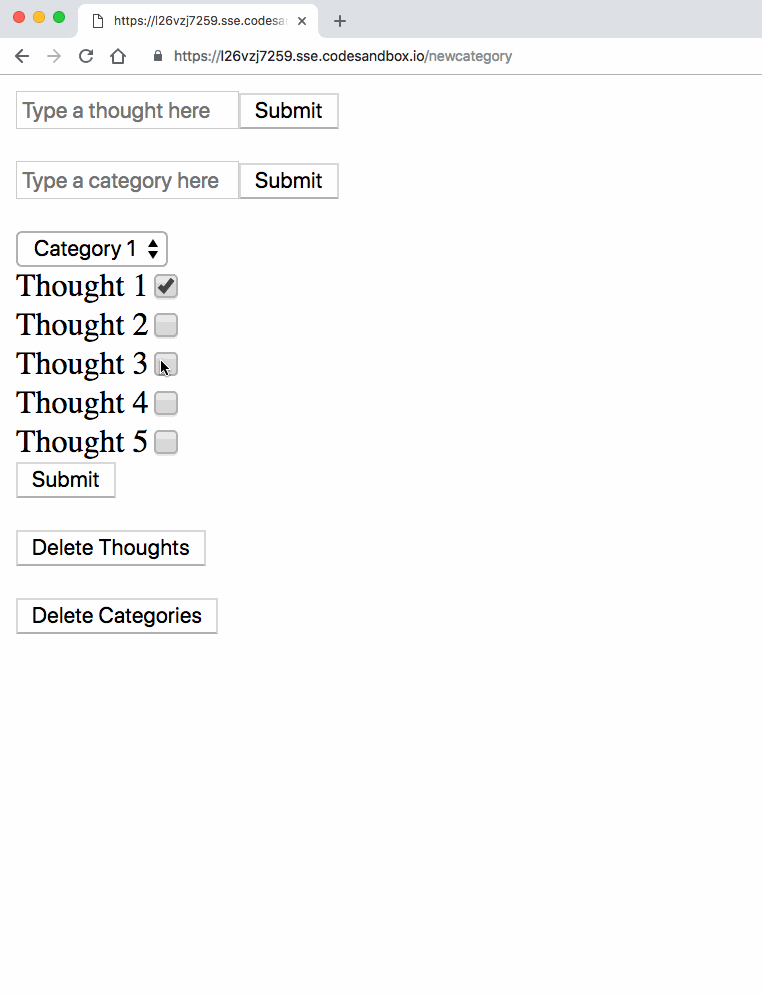
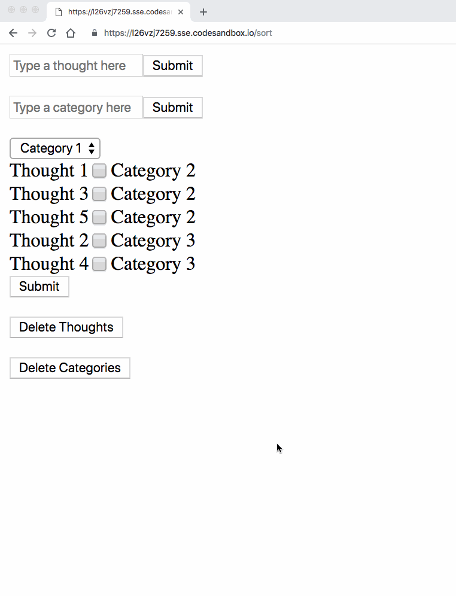

Project Journal: January 17, 2019
The past week was full of events. One unpleasant, the rest of them good.
Let's get the unpleasantness out of the way: the Eagles lost in the divisional round. To ease the pain, it was pretty heartwarming to see this fan (chain) reaction.
My projects, on the other hand, ended up surging forward to the finish line. I had two significant waves of tasks that I have completed thus far this week:
et130webapp
I added the logic for all of the main formulas students will be learning throughout the course, wrote the associated unit tests, and passed them! This was empowering, as I now feel like my two-week version is reasonable enough to finish. There is one more main functionality that I would like to add, which is for the user to be able to select the topic from a dropdown, and have the page refresh accordingly. I may wrap my functions into a single master function/controller that executes the switching based on the user's selection.
If time permits (and I may push my "two-week" timeframe to include MLK Day) I would also like to clean up the formatting of the page, since it gets quite cluttered for problems with many variables:

But that's lower priority than getting the other two projects up to speed.
ThoughtBoard
This project was stalling until today. My original attempt resulted in the following:

However, there were some obvious flaws to this approach:
- There was too much emphasis on the user iteratively updating the text, which was not emphasized in the Core Functionality for this project
- My mind kept wandering towards implementations of jQuery in order to send back updates to the server. And while I don't think that's a bad idea, I didn't think my project was so complex that it required that, especially since I was already using a template engine and, as it turns out, I was not maximizing its utility
- The path to implementing the Core Functionality of iteratively categorizing and grouping thoughts was unclear
So I chose another approach, and branched off the main repo.
Form follows functionality
When I first hit the dead end with that first attempt, I wondered if using a form with dropdowns was restricting the functionality. And I found out that while there's nothing wrong with dropdowns, there's also nothing wrong with checkboxes!
The user could add thoughts to the screen via form input, and they presented themselves with an associated checkbox:

They could then add Categories in a similar fashion, and they populated in the dropdown list one at a time:

They can then assign Categories to one or more thoughts, with the list of thoughts grouping by category each time:

And iteratively re-categorize the thoughts, which would regroup by category upon each submission:

I'm going to sit on it for tonight, but I think this covers the Core Functionality of this project.
FeelsTracker
This is the last project I have to bring up to speed, and I hope to do so in the next few days. The last I worked on this project, it allowed the user to select and submit an emotion, which then was listed on the same page, ordered by date. Not much more to be said, but much more to be done.
Another fcc project bites the dust!
I finished the third of five project in the last freeCodeCamp certification this week. The project, titled Personal Library, allowed the user to CRUD books, and comments to books, to a MongoDB database. This code had a significant amount of client-side code written by fcc, and that added a layer of planning/debugging that ended up in a much richer experience for me. There were some opportunies to read some AJAX documentation, which clarified some of those topics which I had previously left misunderstood. I have two more projects to go, and I assume it will take the greater part of the next few weeks to accomplish.
More podcast episodes
I have listened to quite a few podcast episodes this past week, all from freeCodeCamp's podcast:
- Episode 49: Lyle Troxell
- Episode 48: Ali Spittel, afterwhich I signed up on dev.to
- Episode 47: Laurence Bradford, afterwhich I signed up for some of her email-lessons
- Episode 46: Alexander Kallaway
- Episode 45: Dylan Israel
- Episode 30: Craigslist, Wikipedia, and the Abundance Economy, which made we want to be a nicer person